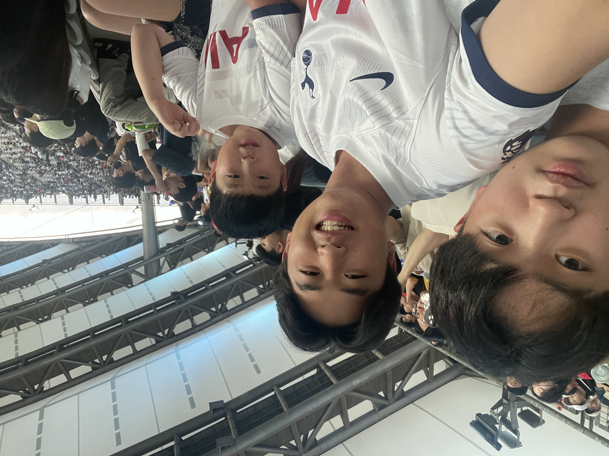
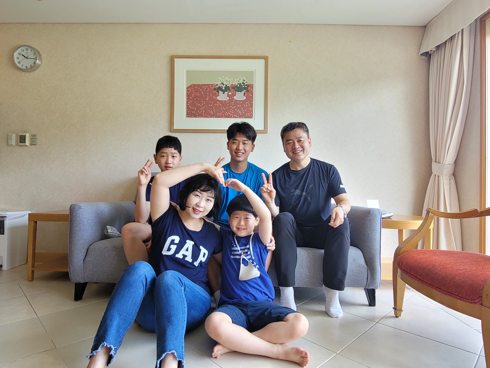
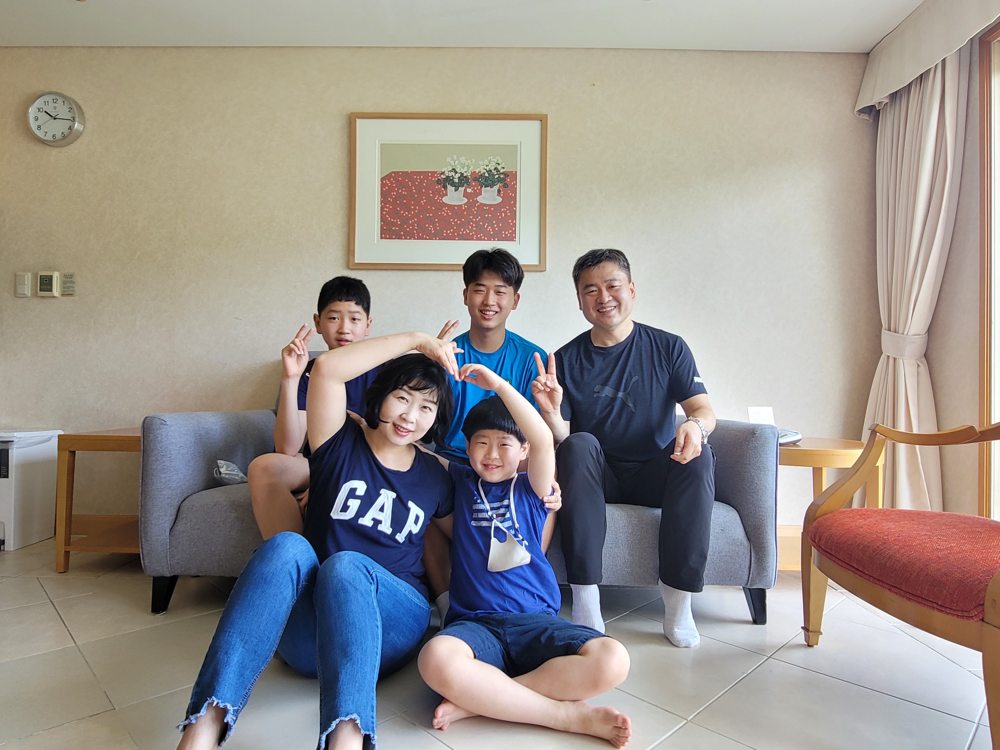
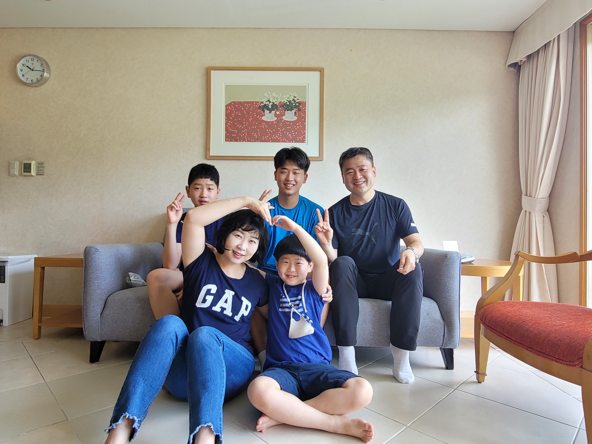

 


사랑하는 엄마 아빠, 항상 저희를 위해 고생하시고 서포트 해주셔서 감사합니다. 비록 미국에 멀리 있지만, 엄마 아빠의 무한한 사랑을 느끼고, 또 무한한 응원을 받고 있어서 저는 정말 행복합니다. 제가 공부에 집중하고 잘해나아갈 수 있는 것은 항상 바른 길로 인도해주시는 어머니, 아버지의 손길 덕분입니다. 그 손길 하나하나가 지금의 저를 만들어주고, 제가 앞으로 나아갈 수 있는 큰 힘이 되어주고 있어요. 저희를 챙기시는 것도 감사하지만, 엄마 아빠의 건강과 행복이 1순위가 되었으면 좋겠습니다. 제가 비록 지금은 아무것도 해드릴 수 있는 게 없지만, 한국에 돌아가면 뭐든 해서, 맛있는 음식과 좋은 것들 많이 대접해드리고 싶어요. 항상 하나님 안에서 행복한 가정이 있다는 것이 얼마나 큰 축복인지, 얼마나 든든하고 감사한 일인지 매일 느끼고 있습니다. 멀리서 늘 기도하고 있어요. 사랑합니다.